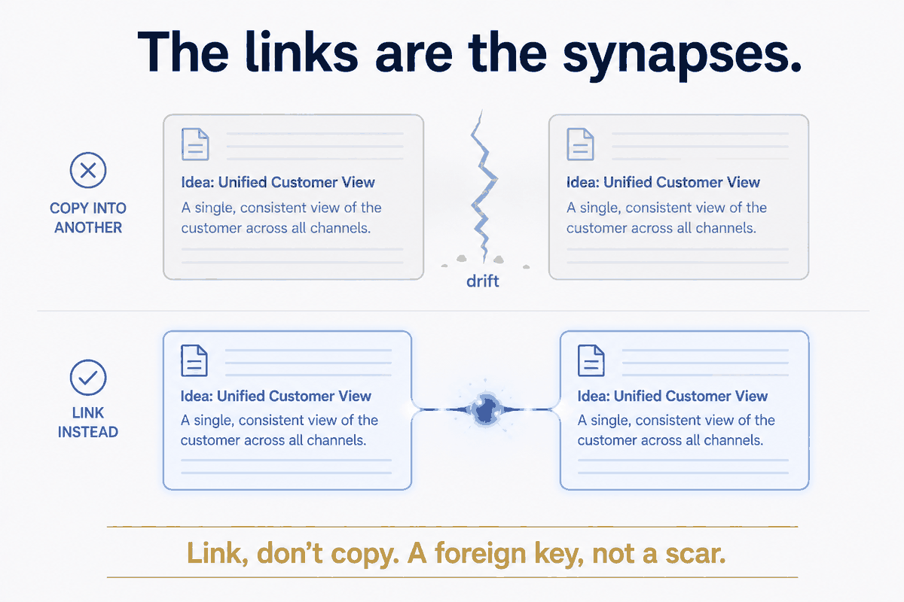
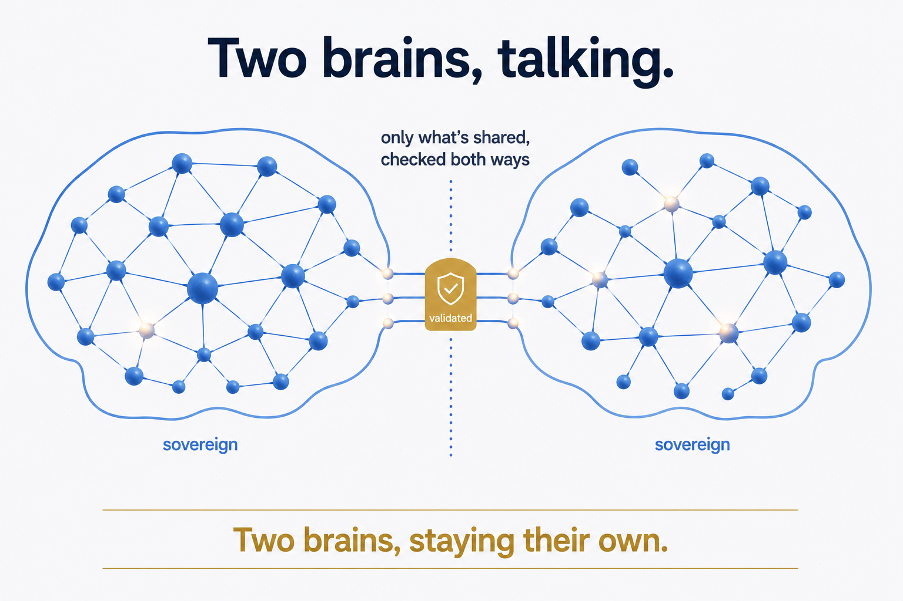

The wrong picture
Most people picture their notes as a filing cabinet. Folders, subfolders, a document in the right drawer. It's a tidy image, and it's the reason most second-brain attempts quietly die. A filing cabinet is where things go to be stored. You put a thing in, close the drawer, and — if you're honest — rarely open it again. Storage isn't the goal. Storage is where knowledge goes to be forgotten neatly.
I built my own second brain for years on the filing-cabinet picture and kept wondering why it felt inert. It held everything and did nothing. The fix wasn't a better folder structure. It was a better picture of what a note even is.
The right picture: a note is a cell
Here's the one that changed it for me. A note isn't a file in a drawer. It's a brain cell.
A neuron does one thing. It holds one small charge, one signal, and its power comes almost entirely from what it's connected to. On its own a single neuron is nothing. Wired into a network, billions of them become a mind. A brain isn't impressive because of how much it stores — it's impressive because of how it's connected.
Your notes work exactly the same way, if you let them. Each note should be one thing — one idea, one capture, one fact — small and self-contained. Not a sprawling document with ten half-related thoughts crammed in. One cell, one memory. That's the first move, and it's the one almost everyone skips.
Why "one thing per note" is the whole game
It sounds like a fussy formatting rule. It isn't. It's what makes everything else possible.
When a note is atomic — one clean thing — you can do things with it you simply can't do with a bloated document. You can link it precisely, because it means exactly one idea. You can move it, share it, and check it as a whole, because there's nothing extra tangled up inside. You can trust it, because it says one true thing rather than ten vague ones. The atom is the unit of trust. A note that tries to be a whole folder can't be any of these things — it's too entangled to reuse and too messy to verify.
Boring rule, enormous payoff: the smaller and cleaner the cell, the more useful the network it can join.
The links are the synapses
If notes are neurons, the links between them are synapses — and that's where the thinking lives.
The value of a brain was never in the cells. It's in the wiring. Same with your notes: the connection between two ideas is worth more than either idea alone. The trick is how you connect them. You don't connect notes by copying one into another — that's not a synapse, that's a scar; now you have two copies that drift apart by the second edit. You connect them by linking — a lightweight reference in the note's metadata that points at the other. The idea stays in one place; the connection is cheap, and it can change without breaking anything.
This is loose coupling, and it's the same discipline a good database uses — a foreign key, not a duplicated row. I spent twenty-five years applying that rule to data platforms before I noticed it was the rule my own notes had been missing. Link, don't copy. The web holds because of the wiring, not the redundancy.

A brain that remembers, and rewires
A filing cabinet is frozen. A brain is not — it learns. Every time you use it, it strengthens some connections and forms new ones. Your second brain should do the same. Each note carries its own small history of changes; each new link is the system rewiring itself; each time you revisit and connect, the whole thing gets a little smarter than it was. Tend it, and it compounds. Neglect it, and — like a real brain — it atrophies. A vault you never wire and never revisit isn't a second brain. It's a storage unit you're paying rent on.
That's the honest caveat, and it's a real one: the brain picture only pays off if you actually use the thing. Atomic notes you never link are just tidier storage. The structure earns its keep only when it's lived in.
Two brains, talking
Here's where it goes somewhere most note-taking advice never does.
If your vault is a brain, then two people each have their own brain — and brains can talk. Not by merging into one grey mush where nobody owns anything. Real brains stay separate and communicate across a boundary, one signal at a time, through synapses that fire deliberately. Two second brains should work the same way: each stays sovereign and private, and only a chosen, declared set of cells ever crosses between them — checked on the way out and on the way in, so nothing bad propagates.
My sister and I are building exactly this — a way for our two vaults to share the handful of things we actually share (trips, shared costs, family contacts) without either of us reading the other's mind wholesale. Two brains, staying their own, wired at the edges. I'll write up how that works separately. But the reason it's even thinkable is this picture: once notes are cells and links are synapses, "how do two brains talk" stops being a weird question and becomes the obvious next one.

The picture is the point
None of this needs new software. It needs a different picture of what you're building. Not a cabinet to store things in and forget. A brain: cells small enough to be one clear thing, wired together by links rather than copies, carrying its own memory, getting smarter the more you use it — and, eventually, able to talk to another brain without losing itself.
Your notes were never files. They were always cells. Wire them like it.